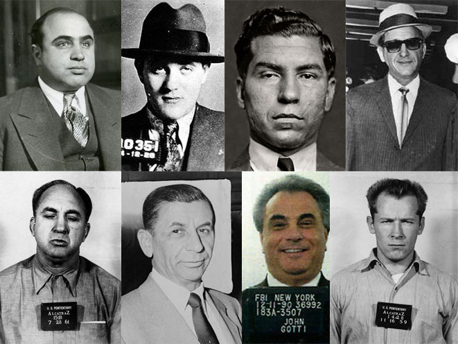
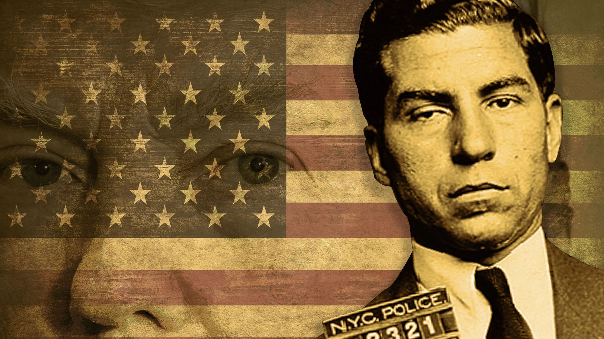
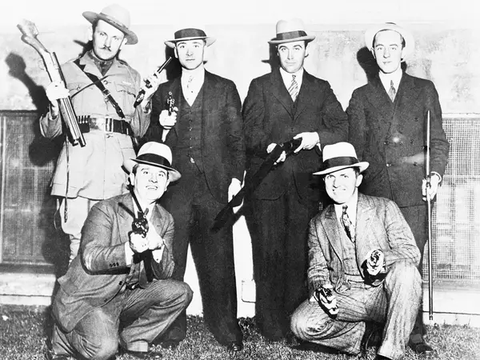
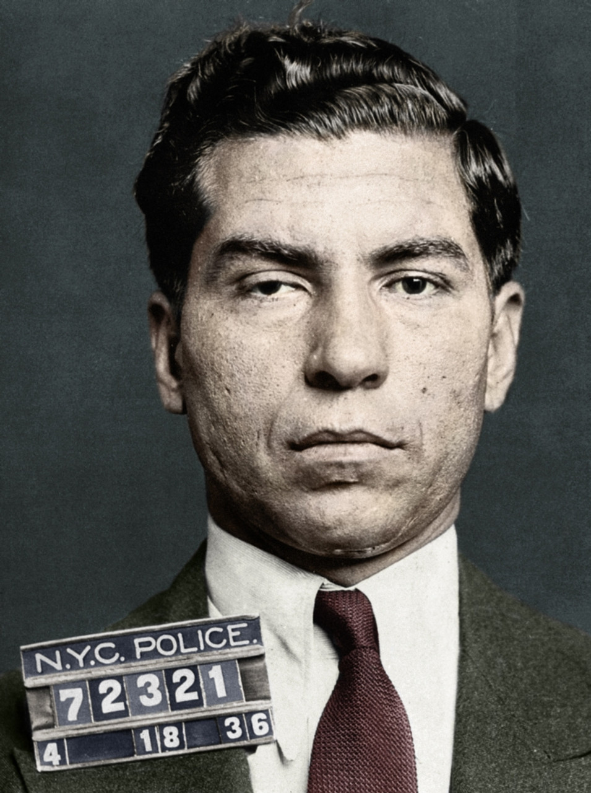
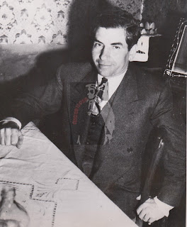
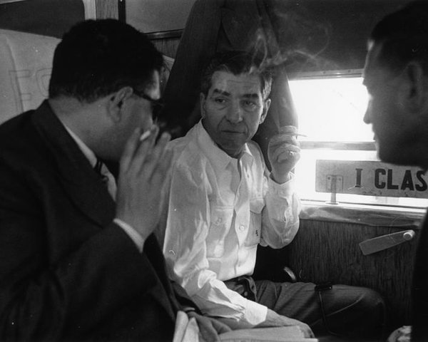
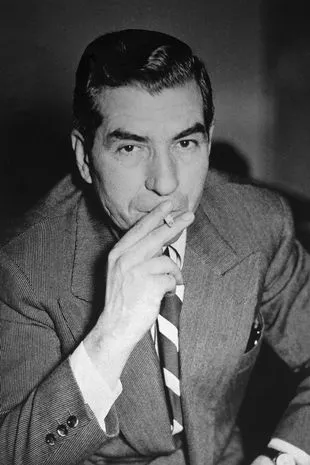
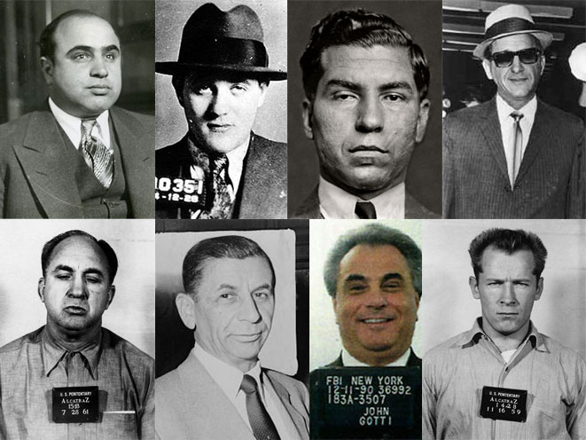
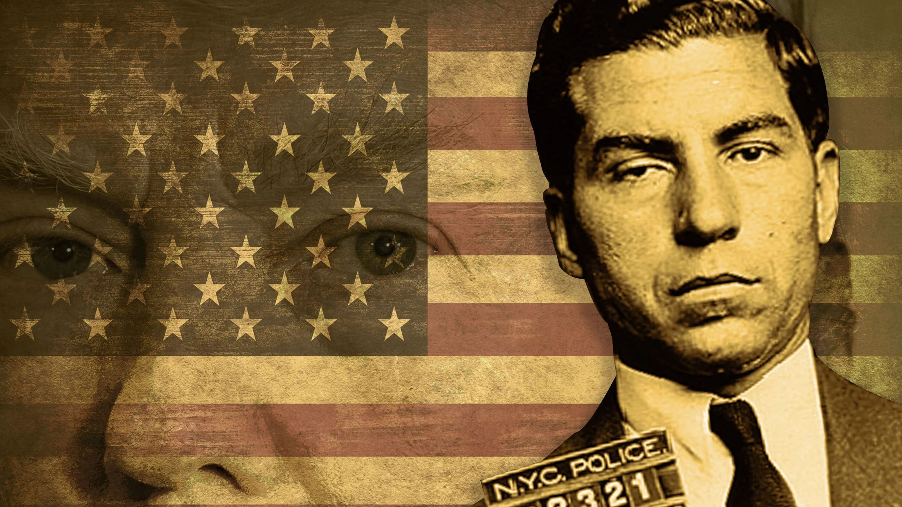
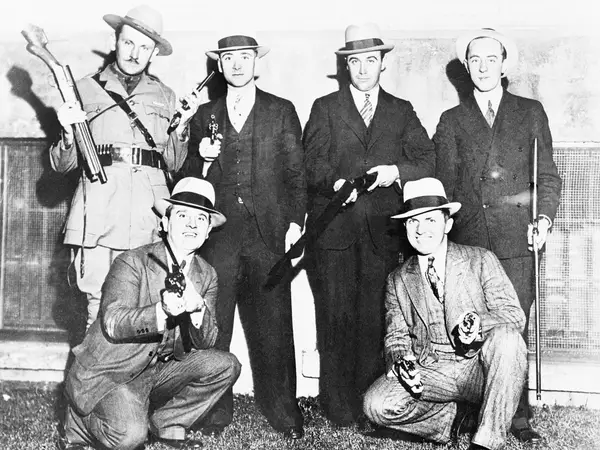
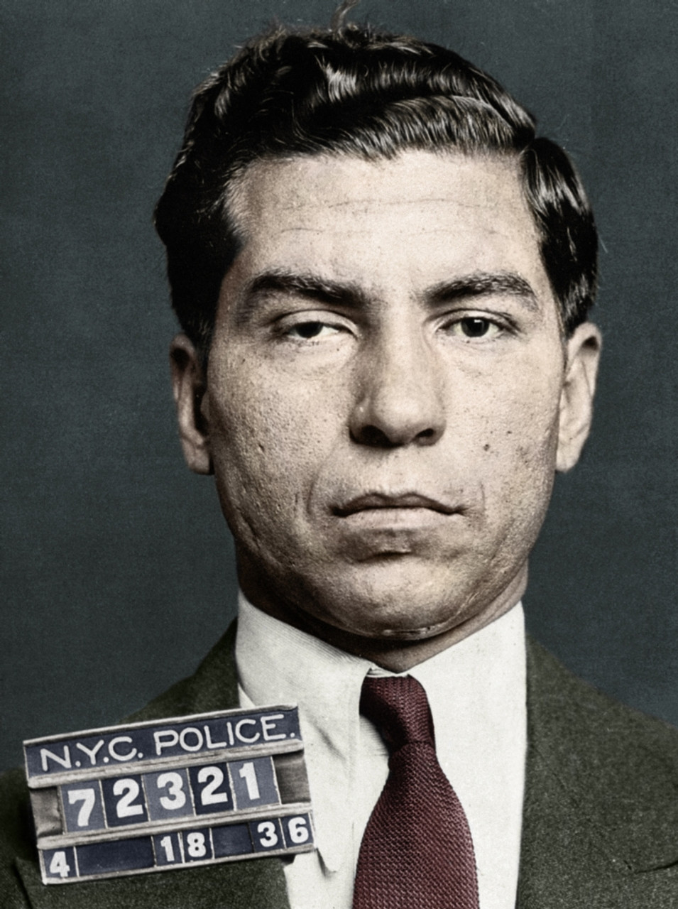
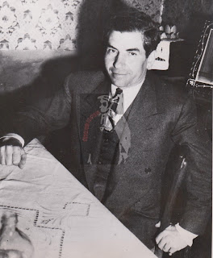
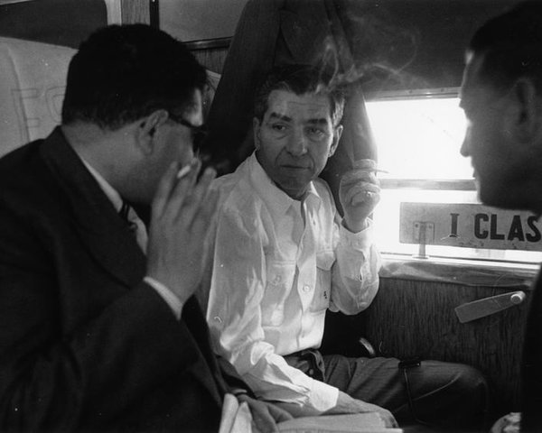
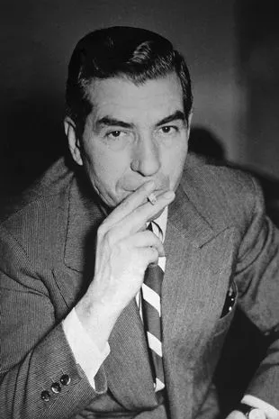
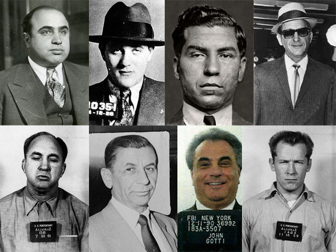
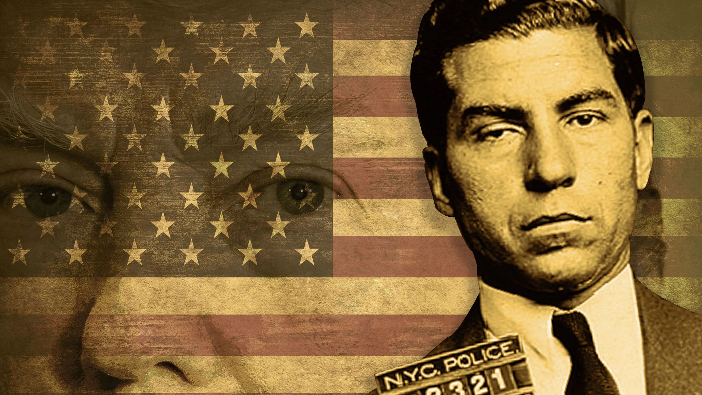
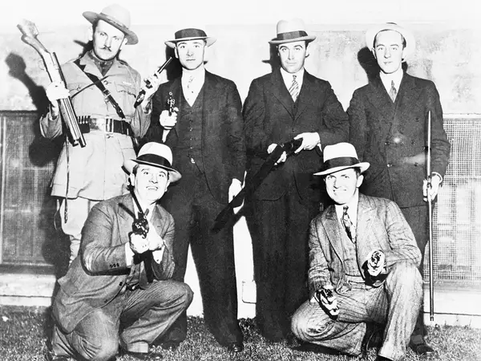
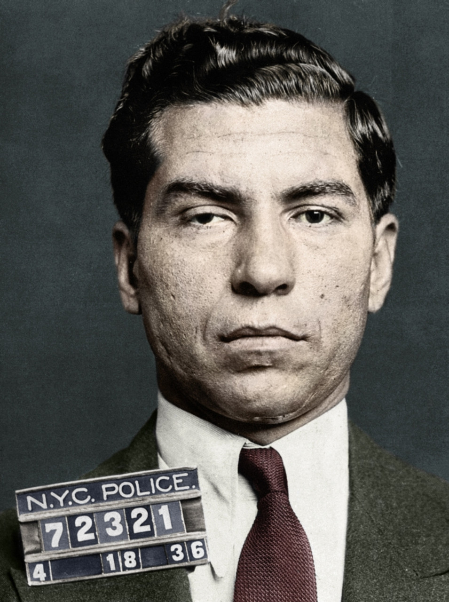
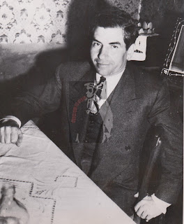
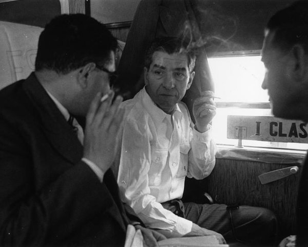
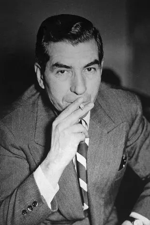
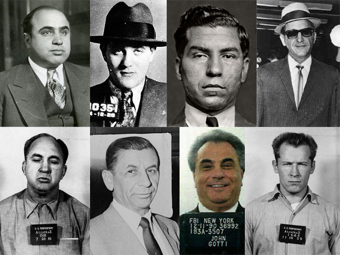
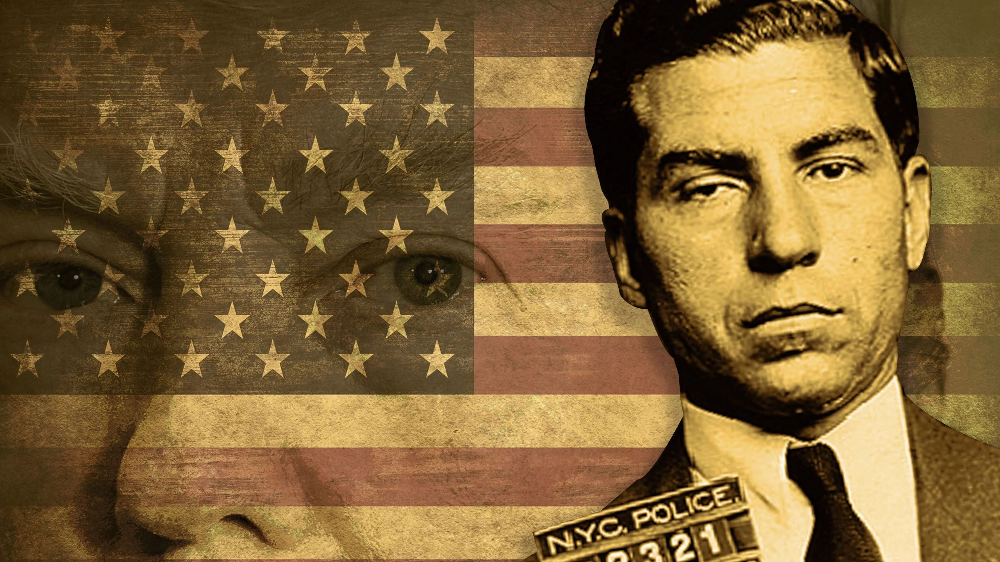
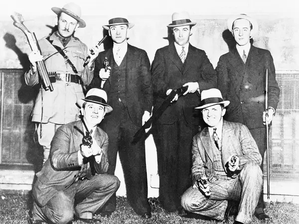
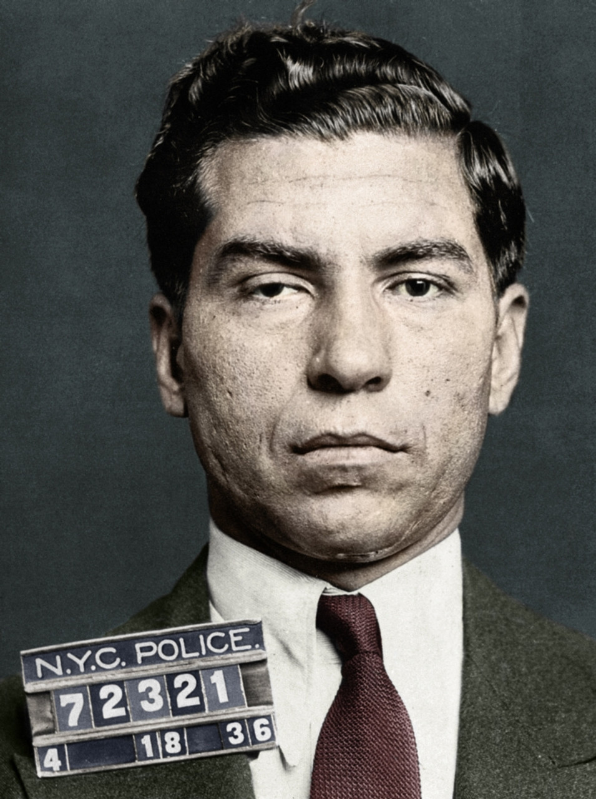
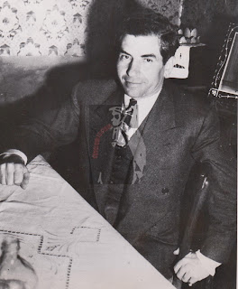
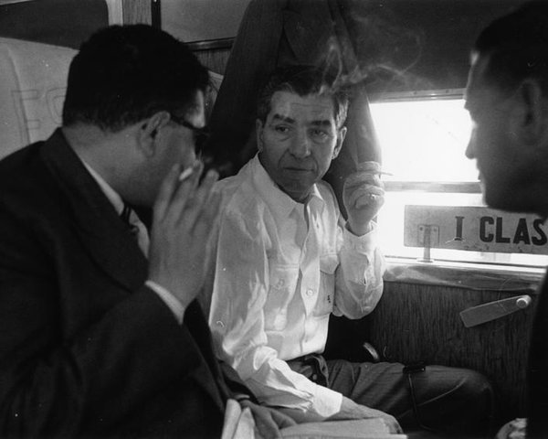
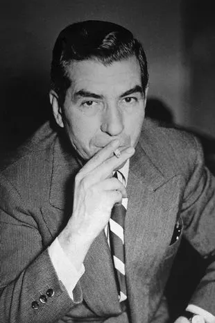
| Body | Measurments |
|---|---|
| Height | 5 foot 10 inches |
| Weight | 160 pounds |
| Appearence | He had dark hair and often carried himself with a confident demeanor. |
| Scars | Luciano had a distinctive scar on his chin from a childhood accident, which became a recognizable feature. |